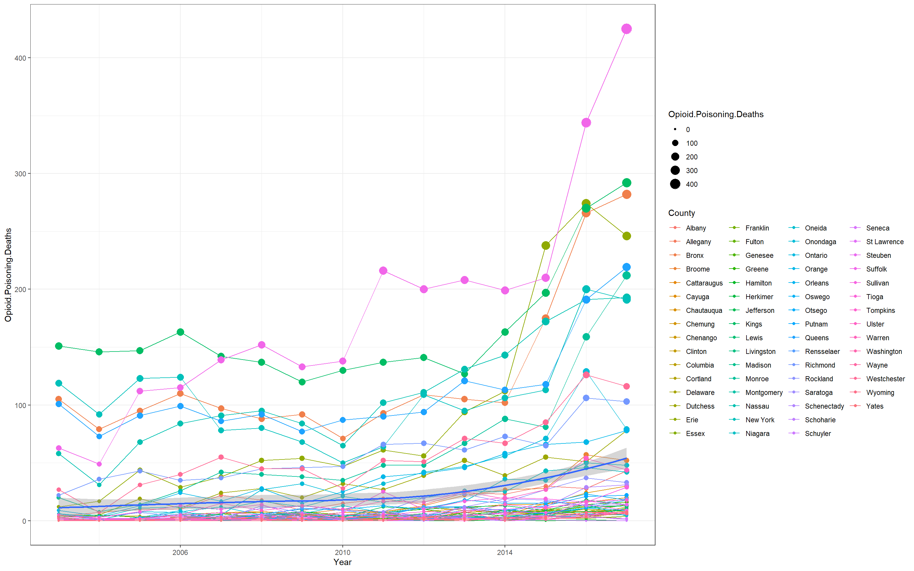

Opoid-Related Deaths in New York State
Spatial Epidemiological Analysis and Risk Factors of Opoid-Related Deathsin New York
Anuwat Pengput
Introduction
Opioid analgesics are pain relievers derived from opium or have an opium-like activity. There are no better drugs than opioids for treating severe pain and suffering, however, opioids are the main drugs associated with overdose deaths. Opioid prescription rates have increased almost threefold associated with an increase of opioid related overdoses and deaths in the last 15 years. New York has been greatly impacted by the opioid epidemic. The rate of deaths related to any opioid in New York has increased by 210% from 2010 to 2016. The opioid overdose death rate in the overall state was 18 deaths per 100,000 residents, which was higher than many states in the United States.
Materials and methods
Narrative and most code will go here. Describe what you are doing and show how to do it (with code).
You can do bullets like this:
- The first most important thing
- The second most important thing
- The third most important thing
You can do numbers like this:
- The first most important thing
- The second most important thing
- The third most important thing
See http://rmarkdown.rstudio.com/ for all the amazing things you can do.
Here’s my first code chunk.
1+2## [1] 3Load any required packages in a code chunk (you may need to install some packages):
library(tidyverse)
library(tidycensus)
library(leaflet)
knitr::opts_chunk$set(cache=TRUE) # cache the results for quick compilingDownload and clean all required data
NY <- get_acs(geography = "county",
variables = c(medincome = "B19013_001"),
state = "NY")## Getting data from the 2013-2017 5-year ACS## Opioid Deaths
vital <- read.csv('data/vital.csv')
str(vital)## 'data.frame': 930 obs. of 3 variables:
## $ Year : int 2003 2003 2003 2003 2003 2003 2003 2003 2003 2003 ...
## $ County : Factor w/ 62 levels "Albany","Allegany",..: 1 2 3 4 5 6 7 8 9 10 ...
## $ Opioid.Poisoning.Deaths: int 4 0 105 5 1 1 3 2 1 1 ...head(vital)## Year County Opioid.Poisoning.Deaths
## 1 2003 Albany 4
## 2 2003 Allegany 0
## 3 2003 Bronx 105
## 4 2003 Broome 5
## 5 2003 Cattaraugus 1
## 6 2003 Cayuga 1str(NY)## Classes 'tbl_df', 'tbl' and 'data.frame': 62 obs. of 5 variables:
## $ GEOID : chr "36001" "36003" "36005" "36007" ...
## $ NAME : chr "Albany County, New York" "Allegany County, New York" "Bronx County, New York" "Broome County, New York" ...
## $ variable: chr "medincome" "medincome" "medincome" "medincome" ...
## $ estimate: num 62293 45359 36593 49064 45571 ...
## $ moe : num 1234 1489 389 1113 1241 ...head(NY)## # A tibble: 6 x 5
## GEOID NAME variable estimate moe
## <chr> <chr> <chr> <dbl> <dbl>
## 1 36001 Albany County, New York medincome 62293 1234
## 2 36003 Allegany County, New York medincome 45359 1489
## 3 36005 Bronx County, New York medincome 36593 389
## 4 36007 Broome County, New York medincome 49064 1113
## 5 36009 Cattaraugus County, New York medincome 45571 1241
## 6 36011 Cayuga County, New York medincome 54664 1603ggplot (data = vital) +
geom_line(aes(x = Year, y = Opioid.Poisoning.Deaths, group = County, col = County)) +
geom_point(aes(x = Year, y = Opioid.Poisoning.Deaths, group = County, col = County, size = Opioid.Poisoning.Deaths)) +
geom_smooth(aes(x = Year, y = Opioid.Poisoning.Deaths))+
theme_bw()## `geom_smooth()` using method = 'loess' and formula 'y ~ x'
Add any additional processing steps here.
Results
Show tables, plots, etc. and describe them.
m <- leaflet(data) %>%
addTiles() %>%
addCircleMarkers(~x, ~y, radius = ~size,color = ~as.factor(category)) %>%
addPopups(~x[2], ~y[2], "Random popup")
m # a map with the default OSM tile layerMap of completely random data
data %>%
ggplot(aes(x=x,y=y,col=category))+
geom_point()
Conclusions
What have you learned? Are there any broader implications?